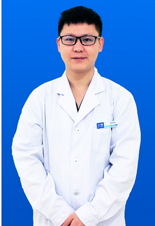
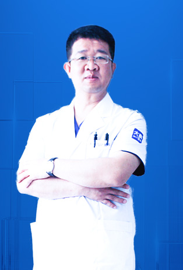
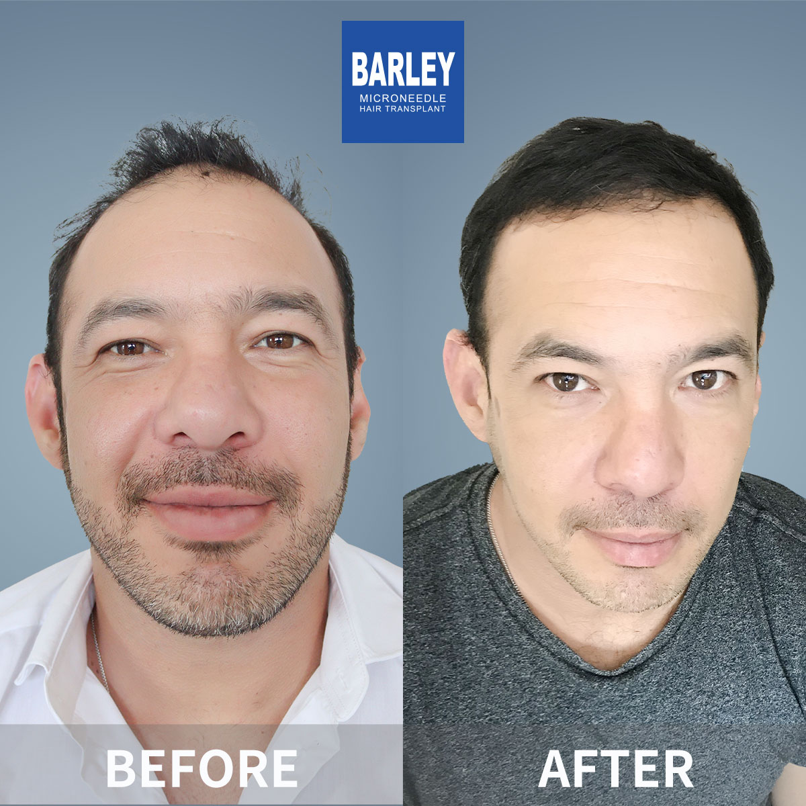
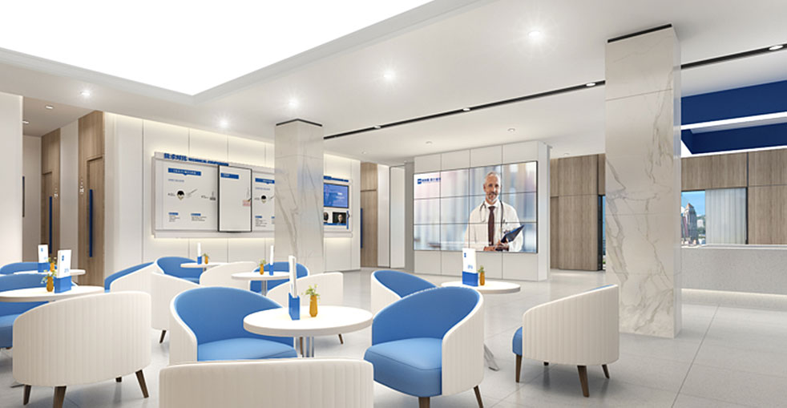

Our distinguished team of hair restoration specialists combines decades of expertise with advanced microneedle technology. Each doctor is board-certified, internationally trained, and committed to delivering exceptional, natural-looking results for patients worldwide.

Director, Beijing Clinic
Associate Chief Physician and founding member of the Asian Hair Transplant Association. Dr. Yin is a nationally recognized hair restoration specialist with a focus on revision surgery and complex corrective cases. He has successfully restored hair for thousands of patients whose previous procedures failed elsewhere.

Technical Director, Beijing Clinic
A pioneer in artistic microneedle transplantation, Dr. Wang specializes in large-area restoration and density enhancement. He has treated hundreds of international patients and is known for his meticulous approach to graft placement and natural-looking outcomes.
Technical Director, Beijing Clinic
Dr. Feng is highly regarded for her refined hairline design skills and mastery of FGF dual-factor microneedle transplantation. Her gentle technique and attention to aesthetic detail have earned her a loyal following among patients from overseas.

Director, Beijing Clinic
An active participant in the 528 Hair Love Foundation's charitable outreach, Dr. Song combines clinical excellence with a genuine commitment to making quality hair restoration accessible. He is particularly skilled in hairline design and large-area procedures using FGF technology.

Director, Beijing Clinic
Dr. Li brings years of hands-on clinical experience to every procedure. Known for his patient-centered approach, he takes time to understand each individual's goals and tailors the surgical plan accordingly, with a strong track record in international patient care.

Director, Chengdu Clinic
Dr. Guan leads the Chengdu clinic with a specialty in microneedle FUE and artistic hair transplantation. He has developed a reputation for delivering consistently high graft survival rates and has welcomed numerous international patients to his practice.

Technical Director, Nanchang Clinic
As the technical lead for the Nanchang clinic, Dr. Duan is an expert in no-shave extraction techniques and large-area follicle harvesting. His proficiency with FGF technology allows for faster recovery and more robust graft growth.

Director, Jinan Clinic
Dr. Gao is a seasoned practitioner at the Jinan clinic with deep expertise in hairline design and microneedle density optimization. His use of FGF-enhanced transplantation technology promotes faster healing and fuller results for every patient.

Director, Nanchang Clinic
Dr. Xiong directs the Nanchang clinic with a focus on high-density microneedle transplantation and large-area coverage. His expertise with FGF technology enables faster healing times and consistently strong graft growth.

Director, Qingdao Clinic
Dr. Liu heads the Qingdao clinic, bringing a wealth of experience in microneedle transplantation and large-area restoration. His proficiency with FGF technology ensures optimal outcomes with minimal downtime for his patients.

Director, Shanghai Clinic
Dr. Ma leads the Shanghai clinic and is widely respected for his expertise in high-density microneedle procedures, artistic hairline work, and scar repair from previous transplant surgeries. His precision-driven approach delivers consistently natural results.

Technical Director, Shanghai Clinic
Dr. Fu serves as Technical Director in Shanghai and is a dedicated member of the 528 Hair Love Foundation's charitable medical outreach program. He specializes in microneedle density optimization, artistic hairline design, and surgical scar revision.

Technical Director, Shenyang Clinic
Dr. Ge is a board member of the China Medical Association's Plastic and Aesthetic Surgery Branch and serves as Technical Director at the Shenyang clinic. He specializes in the full range of microneedle transplantation techniques with particular strength in density optimization and artistic hair restoration.

Director, Xi'an Clinic
Dr. Wang, a board member of the China Medical Association's Plastic and Aesthetic Surgery Branch, leads the Xi'an clinic. He is highly skilled in hairline design, high-density microneedle procedures, and comprehensive large-area transplant surgery.

Director, Zhengzhou Clinic
Associate Chief Physician in Plastic Surgery and an active participant in the 528 Hair Love Foundation's charitable outreach. Dr. Zhong is known for his expertise in specialized transplants including facial hair restoration such as sideburns and eyebrows.

Technical Director, Shanghai Clinic
Associate Chief Physician in Surgery with affiliations at Harbin Hospital's Internet Hospital platform. Dr. Fang excels in large-area transplantation, microneedle density optimization, and refined artistic hairline creation.

Doctor, Beijing Clinic
A dedicated member of the 528 Hair Love Foundation's charitable medical program, Dr. Cui is recognized for her artistic approach to hair transplantation and her ability to achieve natural-looking density in every procedure.

Doctor, Guangzhou Clinic
Dr. Lin practices at the Guangzhou clinic and actively participates in the 528 Hair Love Foundation's charitable outreach. He specializes in hairline design, large-area transplantation, and high-density microneedle procedures.

Hair Transplant Doctor, Beijing Clinic
Dr. Liu is affiliated with Harbin Hospital's Internet Hospital and provides comprehensive hair loss evaluation and treatment. She takes a holistic approach to addressing different types and stages of hair thinning and baldness.

Hair Transplant Doctor, Beijing Clinic
Affiliated with Harbin Hospital's Internet Hospital, Dr. Fang specializes in comprehensive hair loss management, personalized hairline design, and large-area transplant procedures for advanced hair loss cases.

Hair Transplant Doctor, Beijing Clinic
Dr. Tang, also affiliated with Harbin Hospital's Internet Hospital, focuses on hairline design, extensive hair loss treatment, and high-density microneedle transplantation for patients seeking natural, long-lasting results.
Experience the difference of working with internationally trained hair restoration specialists committed to excellence.
Every doctor on our team is fully board-certified and has completed rigorous specialized training in hair restoration, ensuring the highest standards of patient safety and surgical outcomes.
With over 100,000 successful procedures completed collectively, our surgeons bring unmatched hands-on expertise to every single case, from simple touch-ups to complex full-scalp restorations.
Our physicians hold certifications from leading international hair restoration organizations and regularly train at prestigious medical institutions around the world.
From your very first consultation through your final follow-up, you'll receive dedicated one-on-one support tailored to your individual needs, concerns, and recovery journey.
Our multilingual patient coordinators ensure seamless communication at every stage, from pre-trip planning and video consultations to in-clinic guidance and post-operative follow-ups.
Our surgeons maintain perfect 5-star ratings across thousands of verified patient reviews from every corner of the globe, reflecting our unwavering commitment to quality.
All procedures adhere to internationally recognized safety standards
Clinical experience of our senior surgical team
Conveniently located across major Chinese cities
Across all patient groups and procedure types
Peace of mind from consultation to complete recovery
Our advanced local anesthesia techniques ensure you remain completely comfortable throughout the entire procedure. We guarantee a high follicle survival rate, and our patients consistently report minimal discomfort during recovery.
Every member of our surgical team holds full medical licenses and professional certifications. We follow strict international safety protocols so you can trust the quality and integrity of your care at every step.
Our precision microneedle approach means smaller incisions, faster healing, and virtually no visible scarring. You'll be back to your daily routine sooner than you think, with natural-looking results that speak for themselves.
See the remarkable results our patients have achieved





Moments captured with our satisfied patients

Patient celebrating with our surgical team

Patient with our lead surgeon post-recovery

Another happy patient shares their story

Patient with specialist before leaving the clinic

Happy patient with our specialist post-treatment

Patient proudly showing their new look

Patient thrilled with their transformation

Patient starting a new chapter with restored hair
Verified testimonials from patients around the world
"Dr. Yin Canchang's technical mastery is genuinely impressive. I had a failed transplant from another clinic two years ago, and the scarring was significant. He walked me through every phase of the corrective plan with quiet confidence, and during the procedure I could feel how deliberate and precise every movement was. I'm now ten months in and the density recovery is nothing short of remarkable. I'm so grateful for his expertise."
"I researched clinics on three continents before choosing Barley, and Dr. Feng Yuping's consultation sealed my decision. She didn't rush at all — she pulled up high-resolution images of my scalp, marked every miniaturized zone, showed me comparable cases from her portfolio, and answered all twenty-three questions I'd typed into my notes. Her patience made me feel completely at ease before I even booked the surgery."
"The pre-surgical design phase with Dr. Wang Xiaoping blew me away. He used three different markers to sketch my hairline, then took photos from seven angles to check symmetry, then asked me to make facial expressions so he could verify how the hairline moved with my forehead. He wasn't satisfied until I said I loved it. That artistic dedication just isn't something I expected from a transplant clinic."
"During my eight-hour session, Dr. Song Hongwei handled the implantation of the frontal hairline himself. What struck me was the rhythm — every three seconds another graft went in, perfectly angled, perfectly spaced, no hesitation. At one point I dozed off and woke up an hour later to find the team had moved through the mid-scalp without disturbing me once. The whole operation felt choreographed like a ballet."
"I'm a nurse myself, so I pay close attention to how medical teams function. The dynamic between Dr. Ma Guicai and his assistants was outstanding. Clear verbal handoffs, double-checks on graft counts, sterile technique maintained throughout, and every team member knew their role without stepping on each other. This kind of coordinated professionalism only comes from years of working together. It was reassuring to watch."
"The post-op follow-up has been better than any doctor I've seen for anything. Dr. Duan Longwen personally reviewed my photos at day three, week two, month one, and month four — each time with a written note and a quick voice message. When I had a minor concern about scabbing around week six, he jumped on a video call within an hour. I don't feel like a patient; I feel like someone he genuinely wants to see succeed."
Modern, comfortable, and built to international standards

Fully equipped and sterilized

Confidential and comfortable

Relaxing post-procedure care

Your first impression of our clinic

Designed for patient comfort

Relax before your appointment
Everything you need to know about choosing and working with our surgical team
Click to copy contact information
15810155700
+86 13730143529
hairtransplant@qq.com

Everyone's hair loss journey and solution are unique due to a variety of factors. Our hair restoration experts will assist you in determining the root cause and the best solution for your hair restoration plan. If you have any questions, please ask; we are happy to assist.